Foto pendiente
Dr. Gabriel Omar Tapias
Autor del proyecto CIB
Investigación, rutas y cartografía de los caminos reales.
00San Cristóbal · Táchira · Venezuela
Centro Internacional Biotemático
Una montaña entera dentro de la ciudad: 103,8 hectáreas que suben de la calle, a 730 metros, a un pinar a 1.270. Un parque de fe, ciencia y aventura que interviene el 7 % del terreno y deja el resto como bosque.
Prototipo conceptual · No es un proyecto aprobado · Imágenes referenciales
01 · La montaña
La antigua hacienda La Chucurí sube desde la vía, junto a los barrios Marco Tulio Rangel y Genaro Méndez, hasta el pinar que se ve desde toda la ciudad. Sus dueños decidieron mantenerla como bosque: hoy es una isla verde que la ciudad todavía no ha rodeado.
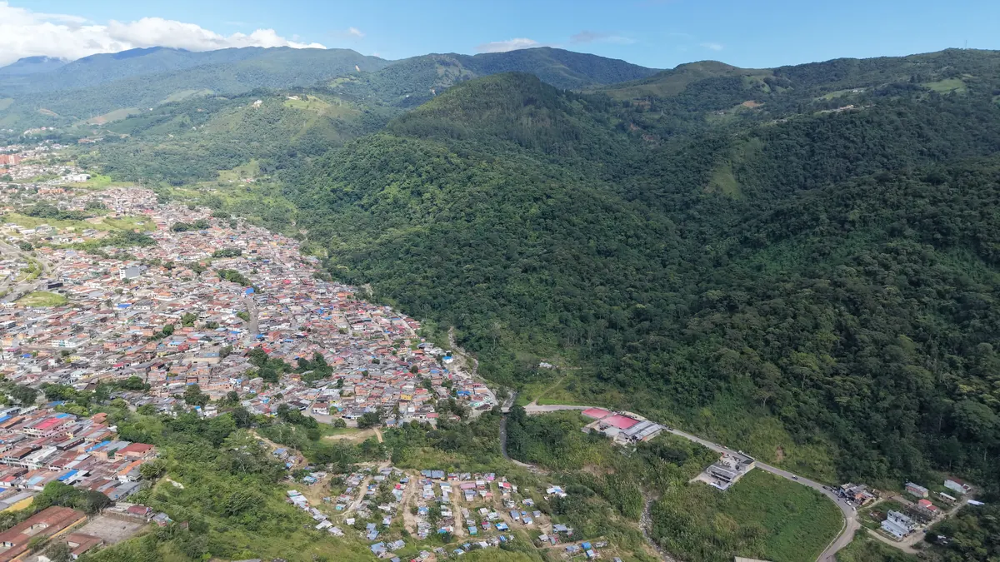

Fotografía aérea: 08-10-2026. Superficie según el levantamiento topográfico de 2004. Distancias aproximadas, medidas sobre la vía.
Cargando la montaña
02 · La maqueta
Gire, acerque y toque cada punto: verá cómo está hoy y cómo podría ser, de día, de noche y de cerca.
Toque los puntos · dos dedos para mover
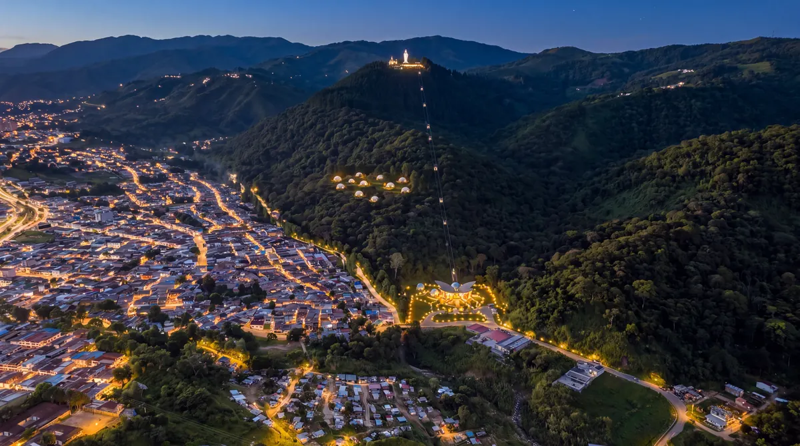
Imagen referencial · La Chucurí de noche
03 · El proyecto
Cada altura tiene su uso. Lo construido se concentra abajo, en la terraza junto a la ciudad; arriba, todo es de bajo impacto. Toque un piso para ir a él.
Deslice el corte hacia la izquierda para subir hasta la cima →
Piso 1 · 730 m
En la terraza baja, junto a la vía: un edificio en forma de mariposa con dos domos de mariposas vivas, el museo de ciencias, laboratorios, el serpentario y centro antiofídico, locales y viveros.
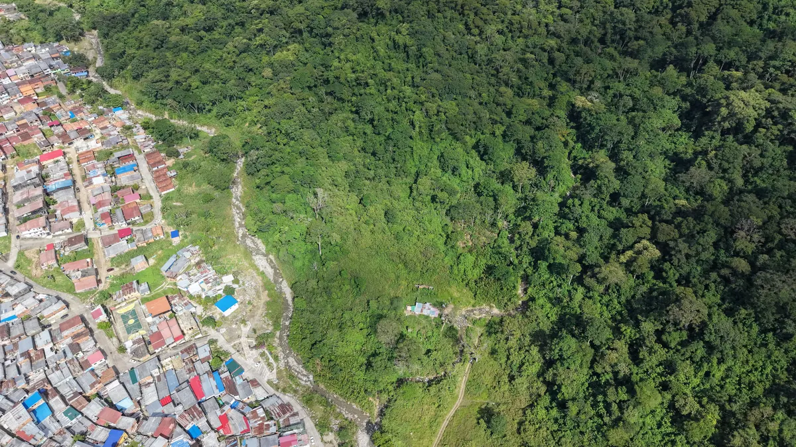

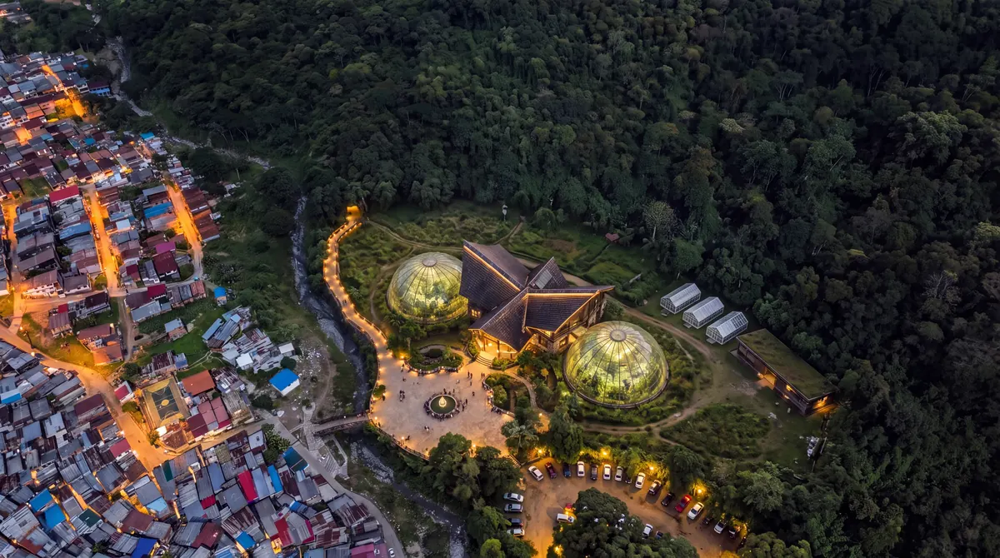
 Imagen referencial
Imagen referencial Imagen referencial
Imagen referencial Imagen referencial
Imagen referencial Imagen referencial
Imagen referencial Imagen referencial
Imagen referencial Imagen referencial
Imagen referencial
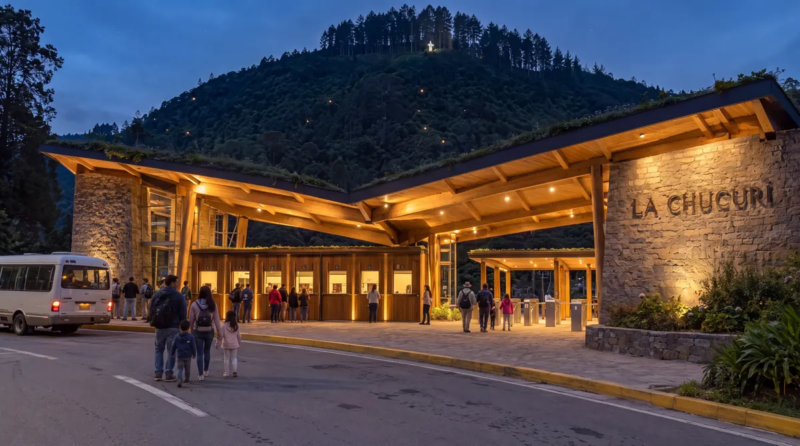
La llegada desde la vía, a 8 minutos de la Plaza Bolívar: un portal de piedra y madera con taquillas y acceso peatonal, abierto de día y de noche.
La terraza baja también admite una universidad. Propuesta A: un campus de ciencias del bosque alrededor del edificio mariposa. Propuesta B: una ciudad universitaria con residencias, biblioteca y cancha.
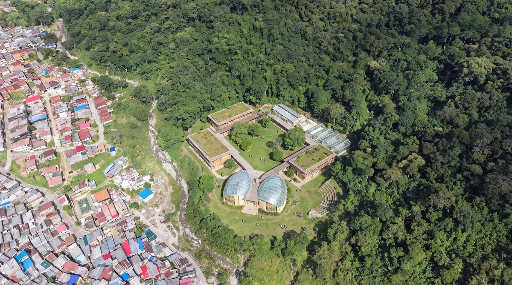
 Imagen referencial
Imagen referencialPiso 2 · Los bordes
Donde el bosque toca los barrios, la Quebrada La Chucurí pasa de frontera a bulevar: caminería, áreas de ejercicio, puentes y un colector que la devuelve limpia, con su flora y su fauna.


Las aguas servidas de los barrios llegan hoy a la quebrada. El colector es parte del proyecto: un impacto positivo para miles de vecinos.
 Imagen referencial
Imagen referencialPiso 3 · 800–1.150 m
Setenta y tres hectáreas de bosque premontano: senderos de interpretación, aulas abiertas, puentes entre las copas, un observatorio de aves y cascadas. De noche, el bosque se enciende.
 Imagen referencial
Imagen referencial Imagen referencial
Imagen referencial Imagen referencial
Imagen referencial Imagen referencial
Imagen referencial Imagen referencial
Imagen referencial Imagen referencial
Imagen referencial Imagen referencial
Imagen referencialEntre los 700 y 1.200 metros crecía el bosque premontano; sobre él se levantaron casi todas las ciudades del Táchira y desde 1840 los cafetales. La Chucurí guarda uno de sus últimos relictos.
 Imagen referencial
Imagen referencial Imagen referencial
Imagen referencial Imagen referencial
Imagen referencial Imagen referencial
Imagen referencial Imagen referencialImagen referencial
Imagen referencialImagen referencialPiso 4 · 1.000 m
Una meseta natural a mil metros y las lomas con vista a la ciudad admiten domos de glamping sobre plataformas de madera, sin cimientos ni vías dentro del bosque.


 Imagen referencial
Imagen referencial Imagen referencial
Imagen referencial Imagen referencial
Imagen referencialConexión
Un teleférico de 1,9 kilómetros sobre el bosque, sin talar bajo la línea, uniría la Puerta con la cima: de 730 a 1.270 metros.

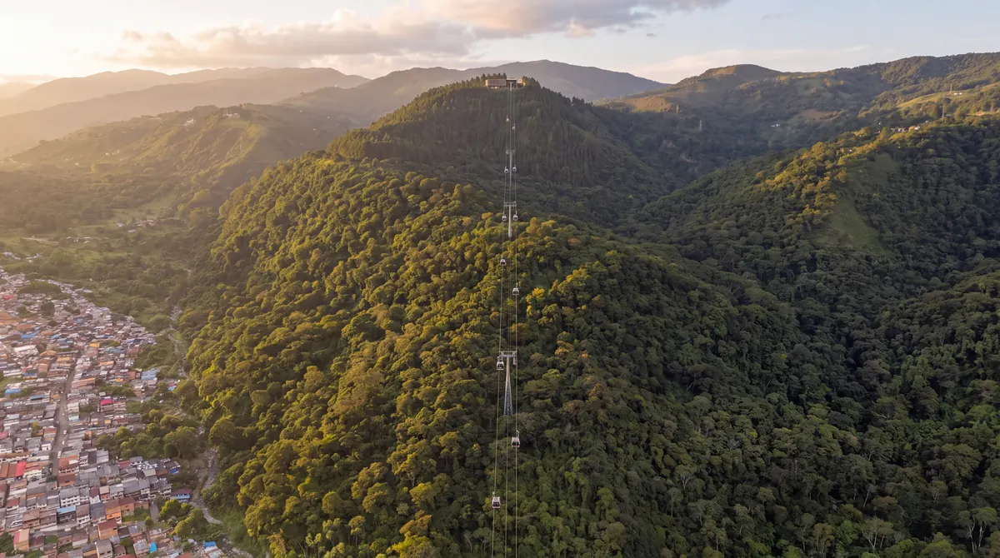

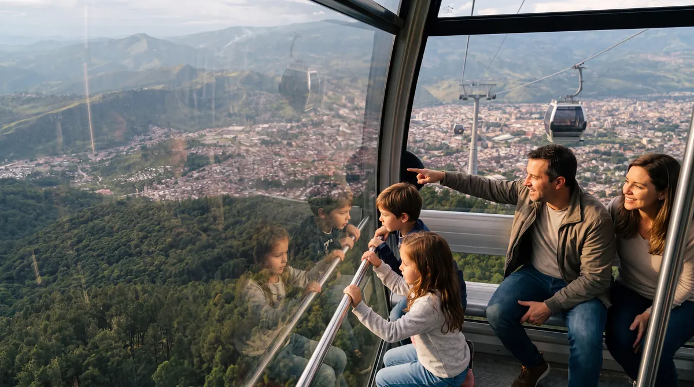
Imagen referencialPiso 5 · 1.270 m
La cumbre mira de frente al centro de la ciudad. Una imagen de 30 metros tendría línea de vista desde la Plaza Bolívar, la Catedral, la ULA, la UNET y hasta la Basílica de Táriba.
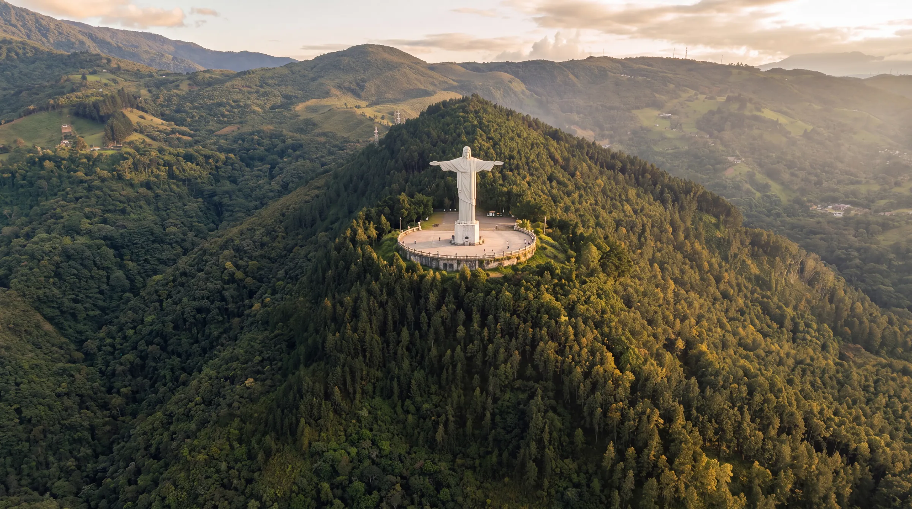
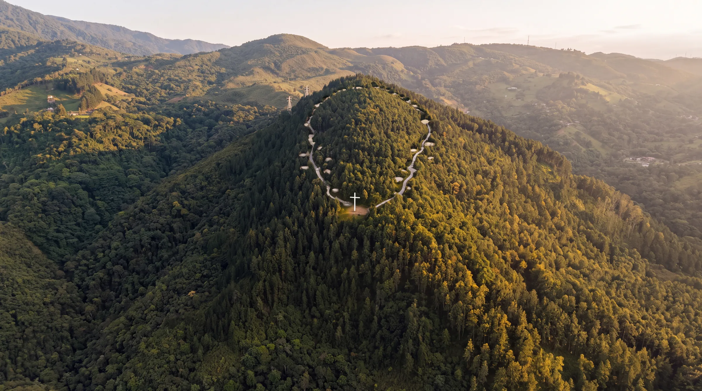
Las tres variaciones sobre la misma foto real del dron. La imagen va en el hombro oeste del pinar, de cara a la ciudad y lejos de la línea de alta tensión.
Una capilla de piedra, madera y vidrio entre los pinos, con el altar abierto a la ciudad. Nombre de trabajo: los dueños pueden elegir otro, como Capilla del Pinar o Santuario de La Chucurí.
 Imagen referencial
Imagen referencial


Al borde del pinar, la estación alta del teleférico y un restaurante con terraza de cara a toda la ciudad: para comer, ver el atardecer y quedarse de noche.
 Imagen referencial
Imagen referencial Imagen referencial
Imagen referencial Imagen referencial
Imagen referencial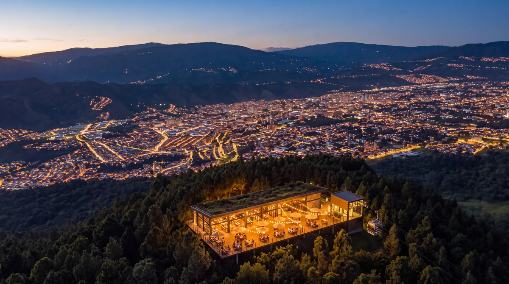
Imagen referencialEl camino del rosario, el jardín de la memoria donde cada pino guarda un nicho, la zona de picnic, el mirador y el despegue de parapente.
 Imagen referencial
Imagen referencial Imagen referencial
Imagen referencial Imagen referencial
Imagen referencial Imagen referencial
Imagen referencial Imagen referencial
Imagen referencial Imagen referencial
Imagen referencial10 · Rutas y senderos
La recuperación de los caminos reales acerca la montaña a la ciudad. De la Av. Rotaria a la Aldea Pánaga son más de 12 km en carro; a pie, por los caminos recuperados, son de 3,5 a 4 km.
Información y cartografía: Dr. Gabriel Omar TapiasDe la Av. Rotaria al sector La Nevada (1,5–2 km) y de La Nevada a la Aldea Pánaga (2 km), por senderos directos.
Senderismo de contemplación con facilitadores del área ambiental: sale del Puente de La Chucurí, sube por la quebrada hasta los Pinos de Pánaga y vuelve por la Quebrada Pánaga.
De la Av. Rotaria a El Nevada, la Casa de la Cruz y la Hacienda Pánaga, hasta los pinos de la Hacienda La Chucurí.
Entre el Hotel Nevada, la Quebrada La Chucurí, los pinos y la Aldea Pánaga, con puentes y miradores.
El Camino de La Chucurí se plantea como transecto de investigación y recreación sobre caminos indígenas, reales y de recuas. Según el Dr. Tapias, la red conectaría con rutas históricas de la región, como el camino fundador Pamplona–San Cristóbal. En la maqueta 3D se ven los senderos propuestos y los caminos existentes.
11 · Ciencia y comunidad
El Centro Internacional Biotemático se plantea como el cerebro científico de una red entre la academia y la comunidad de la Aldea Pánaga, alineado con los Objetivos de Desarrollo Sostenible 4 (educación de calidad) y 15 (vida de ecosistemas terrestres).
Información: Dr. Gabriel Omar TapiasEducación de calidad y vida de ecosistemas terrestres, dentro de los 17 Objetivos de Desarrollo Sostenible.
Teleférico o funicular, laboratorios y senderos de interpretación: la montaña se recorre sin transformarla.
El senderismo guiado como herramienta de ciudadanía activa y aprendizaje en el bosque.
El senderismo interpretativo como motor de arraigo para la comunidad de la aldea.
«Transitar de un turismo de contemplación pasiva hacia un modelo de sentir y pensar con la tierra».
Escobar (2014), citado por el Dr. Gabriel Omar Tapias.
Imagen referencial12 · La historia
Antes de la ciudad estas lomas fueron tierra indígena; por el sur llegó la primera entrada europea al valle y, durante siglos, el ganado del llano. Después fue hacienda de café, y hoy es bosque.
 Imagen referencial · ilustración
Imagen referencial · ilustraciónFuentes: L. G. Castillo Lara, Boletín de la Academia Nacional de la Historia (1991 y 1997) · A. Díaz González (1939), citado en Aldea Mundo (2003) · documento del Centro Internacional Biotemático La Chucurí.
13 · El valor
La demanda ya existe: cada fin de semana, la ciudad sube a sus miradores. La Chucurí puede ser la otra puerta del Parque Nacional Chorro El Indio: la que entra desde la ciudad, directo al bosque.
 Hoy · foto real del dron
Hoy · foto real del dronReferentes de terceros: no son proyecciones de este proyecto.
14 · Desarrollo
El inversionista puede entrar por una concesión (el restaurante mirador, el jardín de la memoria, el mariposario, el glamping, el teleférico, la aventura) o como socio del proyecto completo. El orden lo deciden los propietarios.
Mirador, imagen y capilla, jardín de la memoria, Estación Mirador. Hay acceso por la vía al Chorro y el pinar ya es conocido.
Portal, mariposario y centro de ciencias, locales, bulevar y colector de la quebrada.
Teleférico, senderos, puentes, observatorio, glamping y parapente.
Universidad, laboratorios y centro de investigación, con aliados académicos.
Lo que ya está levantado y lo que se tramita antes de invertir.
15 · Quiénes
Un grupo privado, la academia y la comunidad. Las fotos y los nombres finales se completan con el equipo.
Autor del proyecto CIB
Investigación, rutas y cartografía de los caminos reales.
Propietario
Inversiones Colinas de San Cristóbal S.A., dueña de la antigua hacienda La Chucurí.
Universidades
Docencia e investigación en el bosque, según el documento del proyecto.
Senderismo interpretativo
La aldea y sus guías, parte de la red de caminos.
Imagen referencial · el camino del rosario entre los pinos
16 · Contacto
Esta es una presentación de propuesta. Los datos de contacto se completan con los propietarios.
Prototipo conceptual · No es un proyecto aprobado · Imágenes referenciales